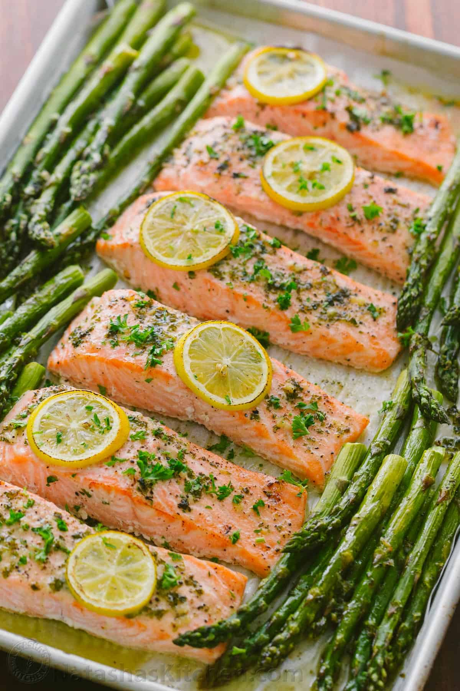

Salmon and Asparagus

Description
Delicious baked salmon with a side of asparagus! Even your kids will love it!
Ingredients
- Salmon Fillets
- Bunch of Asparagus [1]
- Lemon [1]
- Salt
- Pepper
- Extra Virgin Olive Oil
Steps
- Preheat Oven to 400F with baking tray inside
- Place salmon fillets and place them on a cutting board
- Drizzle a small amount of EVOO on each fillet and coat evenly
- Add salt and pepper as desired
- Slice lemon into thin circles and place one or two on each fillet
- Cuts ends off asparagus and then toss in a bowl with a good coating of EVOO
- Add salt and pepper as desired
- When oven is heated, add Salmon and Asparagus directly onto the baking tray and bake for 15 mins
- ***if you would like the salmon skin to not stick to the baking tray, add a thin layer of EVOO to the tray before placing Salmon***
- After 15 minutes, remove tray from oven and serve!